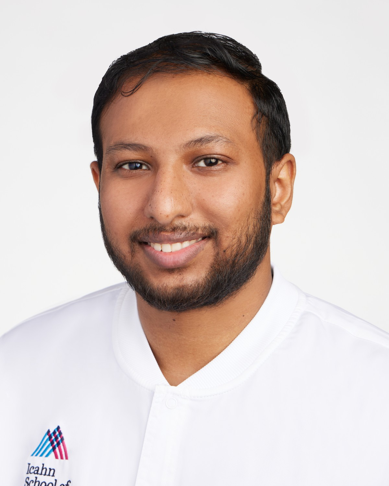

I study how the bone microenvironment reprograms breast cancer cells to drive metastasis and resist therapy — and I image that process in three dimensions.

I'm a cancer biology researcher focused on breast cancer metastasis — specifically how the bone microenvironment influences tumor progression and therapeutic resistance.
I work in the Bado Laboratory (PI: Igor Bado) at the Tisch Cancer Institute, Icahn School of Medicine at Mount Sinai. My work spans the bench and the microscope: I built an intra-iliac artery bone-tumor mouse model and used it to show that the osteogenic niche can reprogram HR+/HER2− tumor cells to express HER2 — sustaining an autocrine signaling loop that seeds secondary, multi-organ metastasis. This work was published as co-first author in Cancer Discovery.
I'm now leading a high-content screen of 800+ epigenetic compounds to restore hormone-receptor expression in dormant, therapy-resistant cells, and reconstructing the metastatic niche in three dimensions through whole-organ tissue clearing and light-sheet microscopy.
My interest in disease began early, reading health bulletins on cancer's rising toll in Bangladesh. My long-term goal is to help develop affordable, effective therapies that prevent metastatic relapse — treatments able to reach patients in developing countries, not only well-resourced clinics.
The osteogenic niche reprograms HR+/HER2− tumor cells to acquire HER2, sustaining an autocrine NRG3–HER2/HER3 loop that drives multi-organ spread. A bone-targeted antibody–drug conjugate reduced circulating tumor cells and slowed metastasis. Cancer Discovery, 2025
A high-content screen of more than 800 epigenetic compounds to restore hormone-receptor expression in dormant breast cancer cells — with the aim of resensitizing them to hormone therapy.
iDISCO and vDISCO tissue clearing paired with light-sheet fluorescence microscopy to reconstruct metastasis intact across bone, brain, lung and ovary.
Cancer Discovery, 2025;15(4):818–837.
Read on Cancer Discovery →San Antonio Breast Cancer Symposium (SABCS), December 2024 — Epigenetic drug profiling for breast cancer therapy: receptor modulation and heterogeneity.
Open to PhD opportunities and research collaboration.